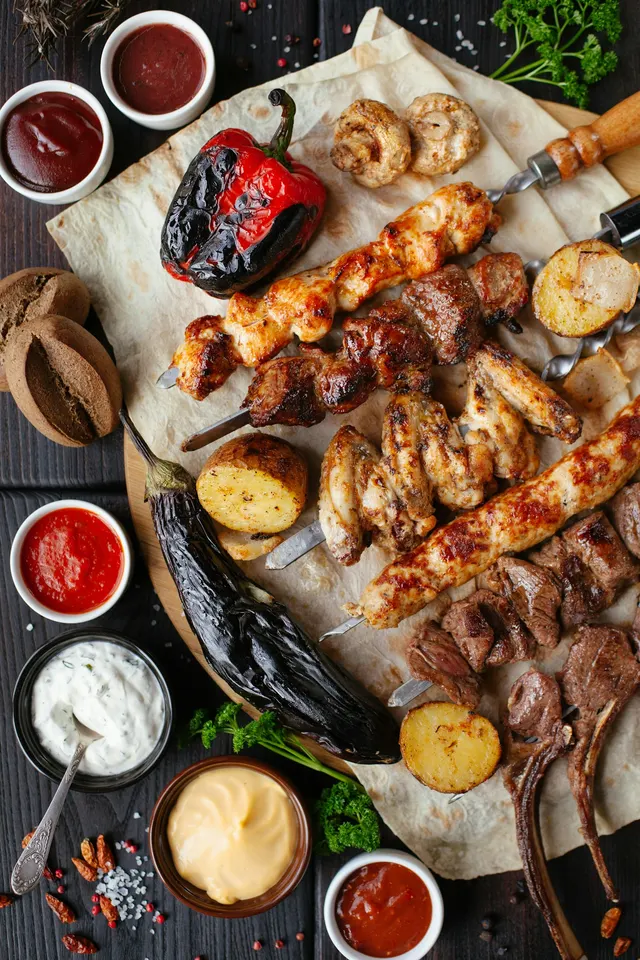
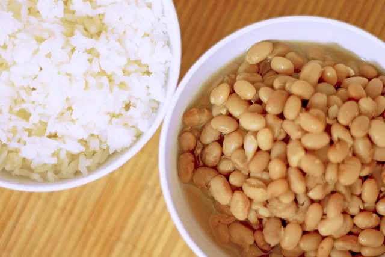
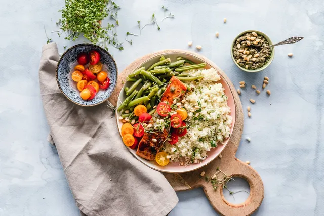

Guias e histórias que dão sabor.
Respostas para as dúvidas mais pesquisadas da cozinha — tempos, medidas, conservação e economia — e as histórias por trás dos ingredientes.

GUIA PRÁTICO · AIR FRYER
Air fryer: tempo e temperatura de cada alimento
Ler guia ↗
CONSERVAÇÃO · SEGURANÇA DOS ALIMENTOS
Quanto tempo dura cada alimento na geladeira
Ler guia ↗
CONSERVAÇÃO · FREEZER
Como congelar e descongelar alimentos sem perder sabor
Ler guia ↗
CHURRASCO · PLANEJAMENTO
Quanto de carne por pessoa no churrasco
Ler guia ↗
BÁSICOS DA COZINHA
Como fazer arroz soltinho e feijão macio
Ler guia ↗
GUIA PRÁTICO · INGREDIENTES
Substituições de ingredientes: guia completo
Ler guia ↗.jpg?width=500)
GUIA PRÁTICO · MEDIDAS
Tabela de medidas caseiras: quanto pesa uma xícara?
Ler guia ↗
ORGANIZAÇÃO · DIA A DIA
Marmitas da semana: guia para economizar tempo e dinheiro
Ler guia ↗
BÁSICOS DA COZINHA
Quanto tempo cozinhar ovo: o ponto certo de cada gema
Ler guia ↗
FEIRA · ECONOMIA
Frutas e legumes da estação: o que comprar em cada mês
Ler guia ↗CADERNO · CULTURA & INGREDIENTES
Guia de temperos de cada região do Brasil
Ler guia ↗
CADERNO · CULTURA À MESA